Platforms
- iPhone · iPad · Apple Watch today
- Android soon
Hero background generated with AI.
Pro monitoring scopes, playback, and Camera-to-Cloud export with built-in, RED, or custom LUT baking. Free and open source.
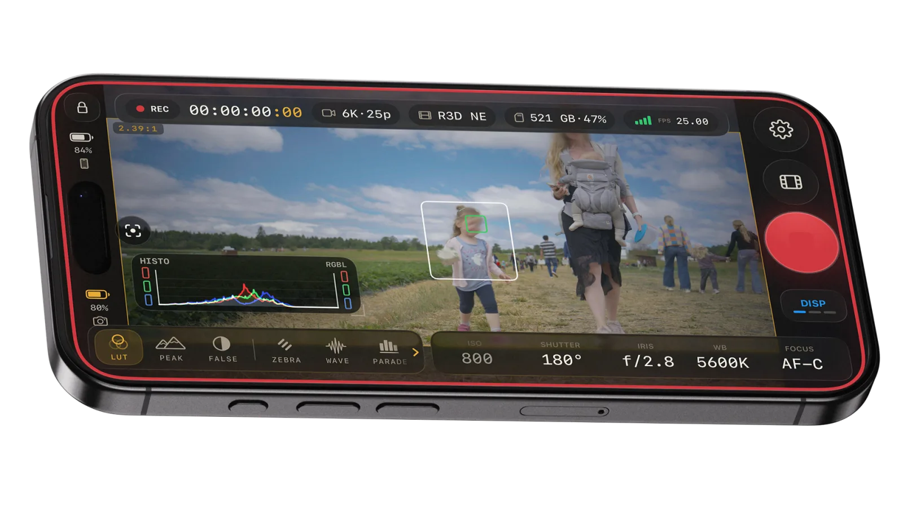
Every scope. Every assist. Full camera control. Free, and open source.
Waveform, RGB parade, histogram, and vectorscope are rendered live from the ZR feed, right where you pull focus.
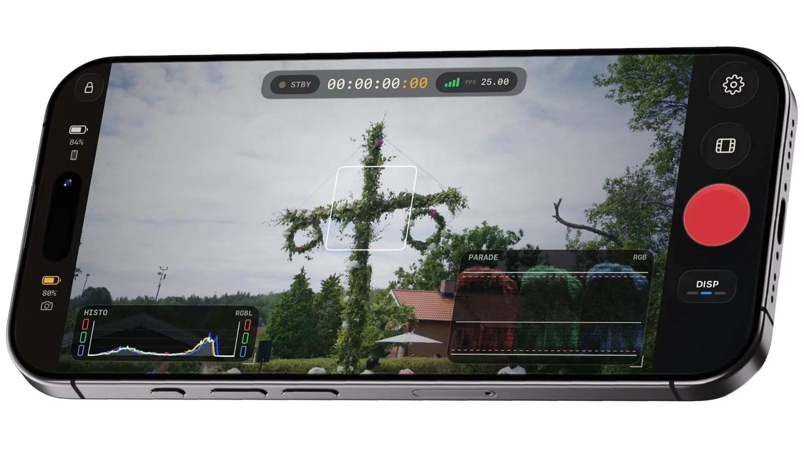
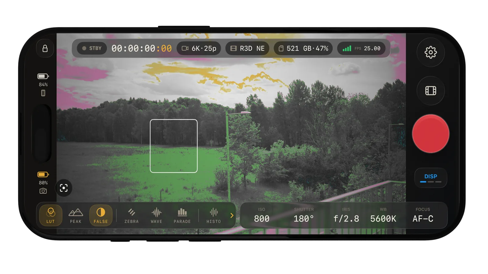
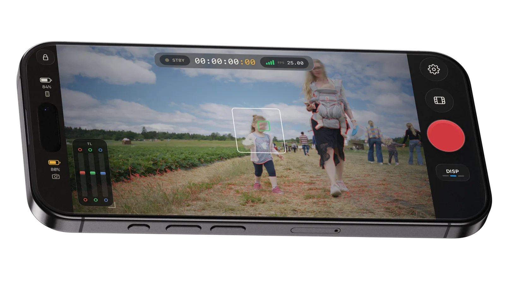
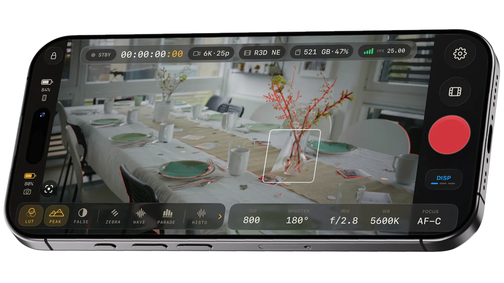
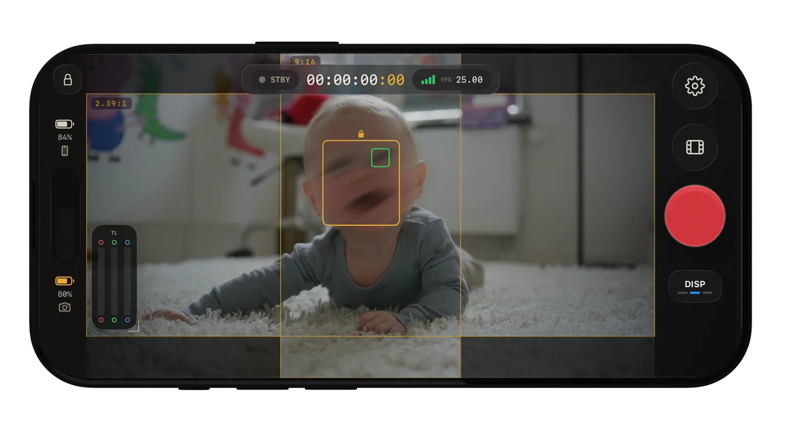
IRE-mapped false color shows crushed shadows and clipped highlights before they cost you the take.
Inspired by RED’s tried-and-true goal posts, Traffic Lights give you an instant RGB read on exposure balance, clipped highlights, and crushed shadows.
Industry-standard focus peaking works across every codec, highlighting sharp edges so you can confirm critical focus at a glance.
Keep multiple aspect markers on screen at once, from 2.39:1 and 9:16 to your own custom frames, so every shot stays ready for cinema, broadcast, and social delivery.
Keep RGB waveform, Traffic Lights, and camera controls in view without crowding the frame.
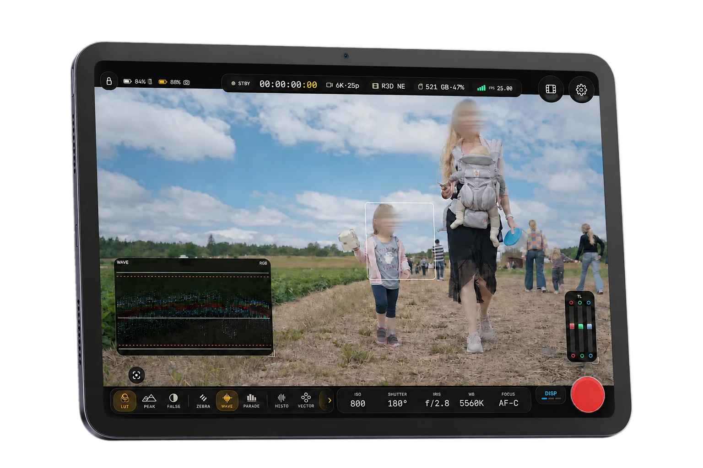
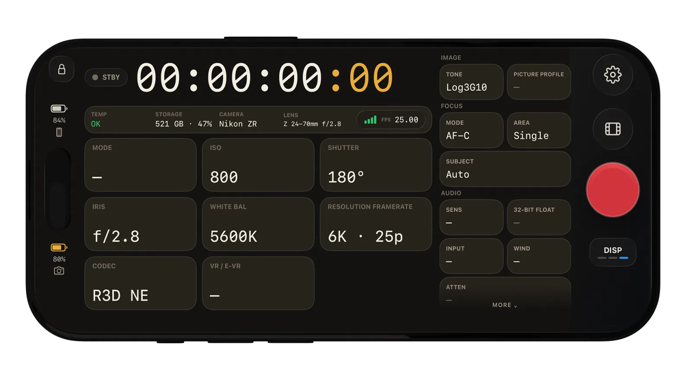
Dial in ISO, shutter angle, iris, white balance, codec, and AF mode from the phone on your cage, with temp, storage, and battery always in view.
Frame-accurate scrubbing with scopes and markers live in playback. Check focus before you strike the set.
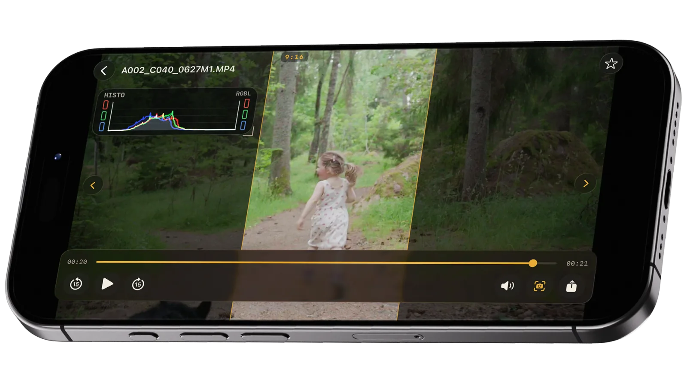
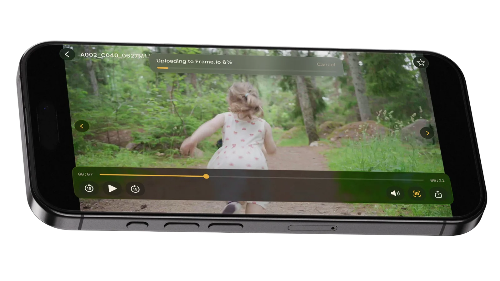
Camera-to-Cloud to Frame.io, native iOS share, or direct export, with built-in, RED, or your own custom .cube LUTs applied on the way out.
Frame.ioThe live feed, LUT and all, is mirrored to your Apple Watch, with timecode, storage, and battery at a glance. Roll and cut the take without touching the rig.
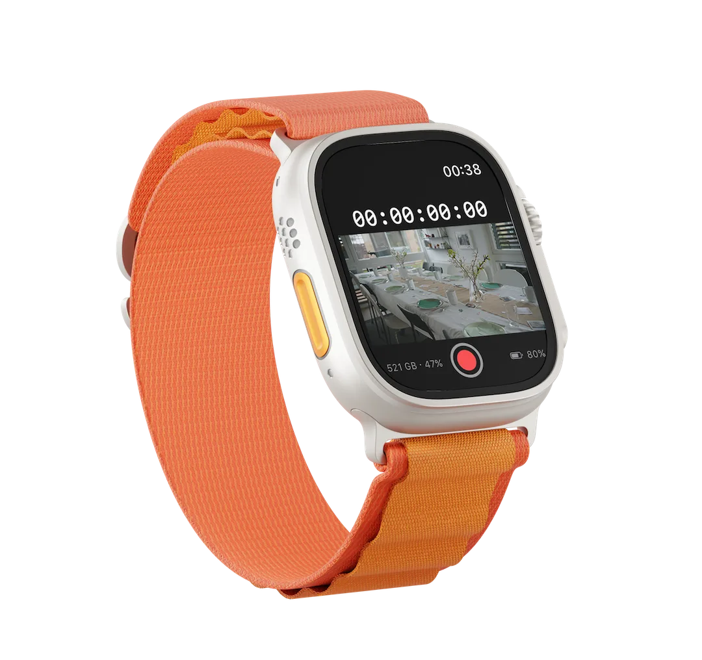
No subscriptions, no paywalls, no telemetry. OpenZCine is Apache-2.0 licensed and built in the open by a community of filmmakers and developers.
Join the TestFlight beta and help shape OpenZCine.